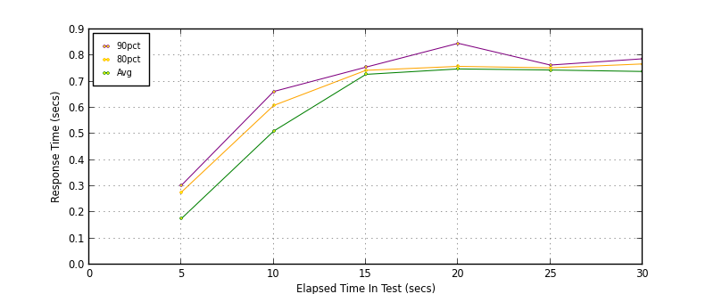
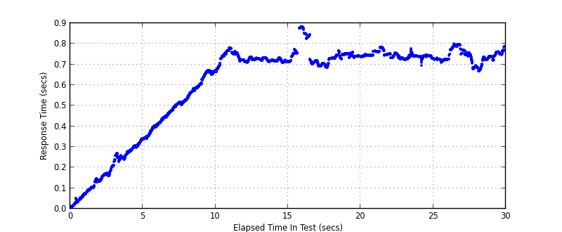
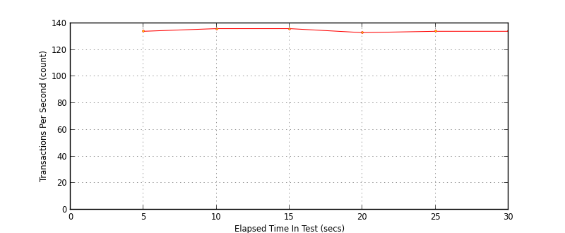
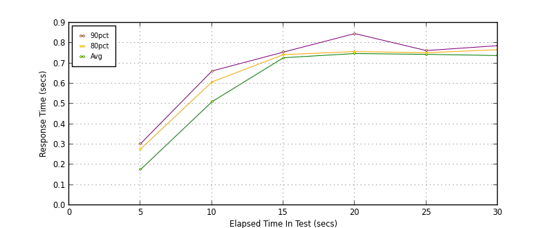

Performance Results Report
Summary
transactions: 4148
errors: 33
run time: 30 secs
rampup: 10 secs
test start: 2013-12-17 16:33:20
test finish: 2013-12-17 16:33:50
time-series interval: 5 secs
workload configuration:
| group name | threads | script name |
|---|
| user_group-1 | 100 | read_user.py |
All Transactions
Transaction Response Summary (secs)
| count | min | avg | 80pct | 90pct | 95pct | max | stdev |
|---|
| 4148 | 0.008 | 0.608 | 0.748 | 0.762 | 0.781 | 0.884 | 0.219 |
Interval Details (secs)
| interval | count | rate | min | avg | 80pct | 90pct | 95pct | max | stdev |
|---|
| 1 | 672 | 134.40 | 0.008 | 0.176 | 0.278 | 0.304 | 0.321 | 0.342 | 0.098 |
| 2 | 684 | 136.80 | 0.337 | 0.511 | 0.609 | 0.662 | 0.667 | 0.673 | 0.101 |
| 3 | 683 | 136.60 | 0.666 | 0.728 | 0.743 | 0.756 | 0.766 | 0.782 | 0.020 |
| 4 | 666 | 133.20 | 0.686 | 0.749 | 0.759 | 0.847 | 0.876 | 0.884 | 0.050 |
| 5 | 673 | 134.60 | 0.696 | 0.745 | 0.753 | 0.764 | 0.774 | 0.784 | 0.013 |
| 6 | 670 | 134.00 | 0.667 | 0.739 | 0.768 | 0.788 | 0.795 | 0.800 | 0.032 |
Graphs
Response Time: 5 sec time-series

Response Time: raw data (all points)

Throughput: 5 sec time-series

Custom Timer: get_tweets
Timer Summary (secs)
| count | min | avg | 80pct | 90pct | 95pct | max | stdev |
|---|
| 4048 | 0.008 | 0.607 | 0.748 | 0.762 | 0.780 | 0.884 | 0.219 |
Interval Details (secs)
| interval | count | rate | min | avg | 80pct | 90pct | 95pct | max | stdev |
|---|
| 1 | 672 | 134.40 | 0.008 | 0.176 | 0.277 | 0.303 | 0.321 | 0.342 | 0.098 |
| 2 | 684 | 136.80 | 0.337 | 0.511 | 0.608 | 0.662 | 0.666 | 0.673 | 0.101 |
| 3 | 683 | 136.60 | 0.659 | 0.728 | 0.743 | 0.755 | 0.766 | 0.782 | 0.021 |
| 4 | 666 | 133.20 | 0.686 | 0.748 | 0.758 | 0.847 | 0.876 | 0.884 | 0.051 |
| 5 | 673 | 134.60 | 0.696 | 0.744 | 0.752 | 0.763 | 0.774 | 0.784 | 0.013 |
| 6 | 670 | 134.00 | 0.667 | 0.738 | 0.767 | 0.787 | 0.795 | 0.800 | 0.032 |
Graphs
Response Time: 5 sec time-series

Response Time: raw data (all points)
Throughput: 5 sec time-series